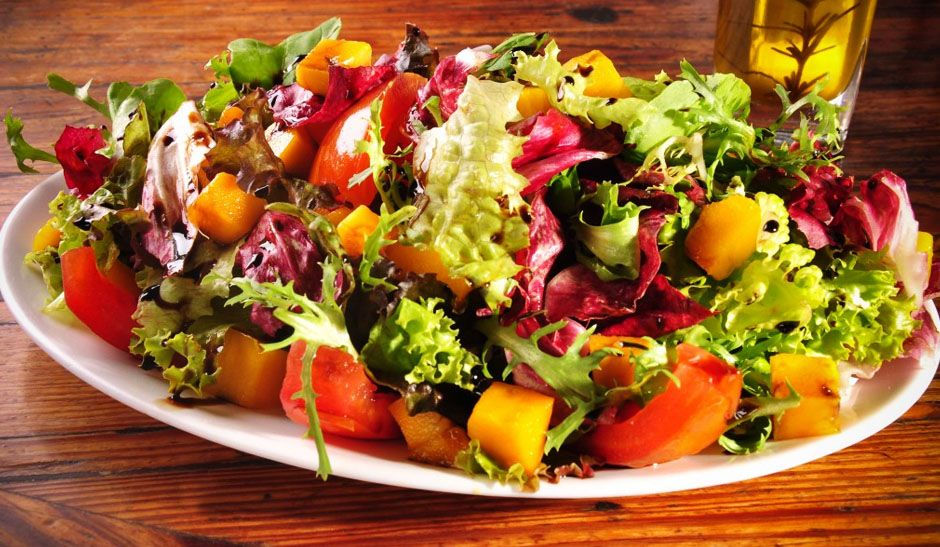
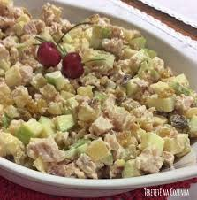

Salada Tropical

Deliciosa e suculenta salada tropical.
Ingredientes: 200g de macarrão tipo parafuso;
2 maços de alface americana;
1 xícara de abacaxi cortado em cubos;
½ vidro de palmito cortado em rodelas;
½ xícara (chá) de macadâmia torrada;
1 xícara (chá) de melão cortado em cubos;
2 kiwis fatiados;
½ xícara de tomates cereja cortado em cubos;
100g de queijo mussarela cortado em cubos;
1 xícara (chá) de suco de maracujá concentrado;
1/4 xícara (chá) de azeite;
sal e pimenta-do-reino a gosto;
1 colher (café) de mostarda;.
Modo de fazer: Arrume em uma bandeja as folhas de alface, o abacaxi, o palmito, a macadâmia, o melão, o kiwi,
o tomate cereja, o macarrão cozido em água e sal al dente e o queijo.
Para o molho, bata o suco de maracujá, o azeite, sal e pimenta-do-reino a gosto e a mostarda.
Despeje sobre a salada reservada e sirva.
Salada Francesa

Deliciosa salada francesa.
Ingredientes: 2 peitos de frango defumado, cortados em cubos ou tiras
8 xícaras de rúcula ou alface americana, lavadas e rasgadas
1 xícara de tomates-cereja, cortados ao meio
1/2 xícara de cebolas roxas, cortadas em fatias finas
1/2 xícara de nozes ou amêndoas torradas, picadas
1/2 xícara de queijo parmesão em cubos
2 colheres de sopa de azeite de oliva extra-virgem
2 colheres de sopa de vinagre de vinho tinto
1 colher de chá de mostarda Dijon
1 dente de alho, picado
Sal e pimenta a gosto.
Modo de fazer:Picar o frango defumado em cubos, picar os demais ingredientes misturar tudo.